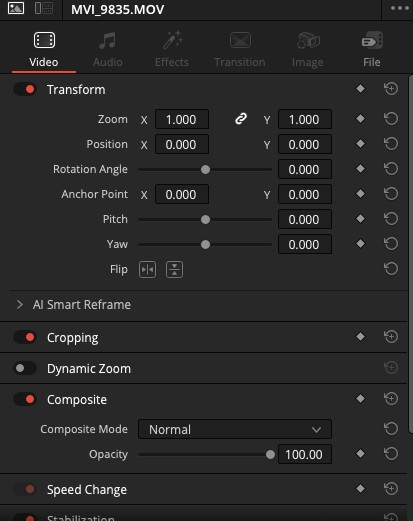
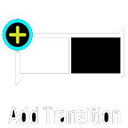
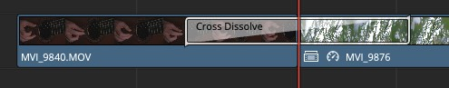
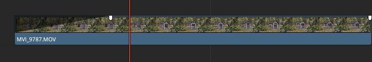
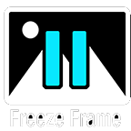
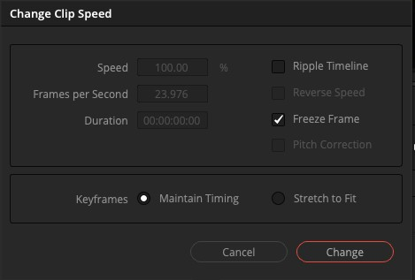
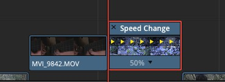
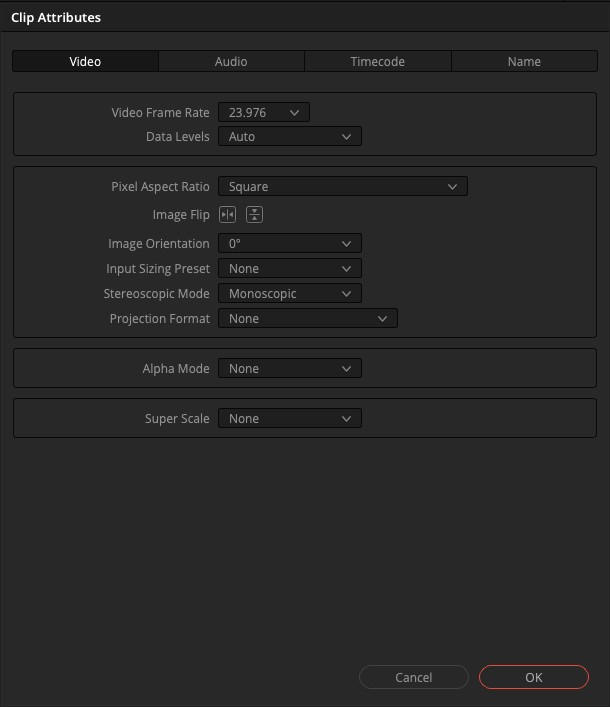
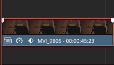
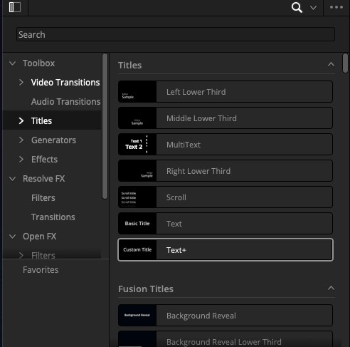

Første del
Inspector
I brugte allerede Inspector kort i Edit L1. Nu ser vi lidt mere på, hvad den kan.
-
Åbn Inspector
Vælg et klip i jeres scene, og klik på Inspector i øverste højre hjørne. Her styrer I klippets egne indstillinger: Transform (position, skalering, rotation) og Crop (beskær kanten af billedet).
Et fif: skal I se transform-håndtagene direkte i billedet og ikke kun som tal, skal I ændre overlayet i timeline viewer, så det viser transform-kontroller.

Der er mange sektioner herunder også. I skal kun bruge Transform og Cropping i dag.
Anden del

TransitionsEn overgang mellem to klip, i stedet for et hårdt klip. Den mest brugte hedder Cross Dissolve, og I finder den under Effects → Video Transitions.
-
Sæt en cross dissolve ind
Klik på det lille grønne felt mellem to klip på timelinen, og højreklik. Vælg Add Transition. Standarden er Cross Dissolve.

Sommerfugl-formen er tegnet direkte på timelinen, ikke et selvstændigt klip.
Hvornår skal jeg bruge en overgang?
Sparsomt. En cross dissolve markerer et tidsspring eller et stemningsskift. Brug den ikke bare for at blødgøre et almindeligt klip, det sender et forkert signal til seeren.
Tredje del
Handles
Den hurtigste fade, I kan lave. Ingen menuer, kun et lille håndtag i klippets hjørne.
-
Træk i håndtaget
Før musen hen over det øverste hjørne af et klip på timelinen. Der dukker en lille cirkel op. Træk den ind mod midten af klippet for at lave en fade ind eller fade ud. Samme håndtag findes i begge hjørner.

De to små firkanter i toppen er håndtagene, uberørte her.
Fjerde del

Freeze Frame, Speed Change og Clip AttributesTre forskellige måder at ændre et klips forhold til tid på. De ligner hinanden, men løser hver sin opgave.
-
Speed Change og Freeze Frame
Højreklik på et klip og vælg Change Clip Speed. Sæt Speed under 100 % for slow motion, over 100 % for hurtigere afspilning. Flueben ved Freeze Frame i samme dialog gør klippet til et stillbillede i stedet.

Freeze Frame sidder i samme dialog som Speed Change, ikke sit eget sted. 
Sådan ser det ud på selve klippet, når hastigheden er ændret. -
Clip Attributes
En anden vej til slow motion: højreklik på et klip og vælg Clip Attributes, fanen Video. Sæt Video Frame Rate højere end timelinens egen. Har I fx optaget i 60 fps på en timeline, der kører 23,976, spiller klippet automatisk i slow motion, uden at I skal regne en procent ud selv.

Video Frame Rate er feltet, der gør arbejdet. Resten kan stå som det er.
Hvornår bruger jeg hvilken?
Speed Change, hvis I selv bestemmer en procent. Clip Attributes, hvis optagelsen allerede er skudt i en højere framerate, og I vil have Resolve til at regne det om for jer. Freeze Frame, når billedet skal stå helt stille.
Femte del
Simpel keyframing
Keyframes lader jer animere en indstilling over tid. Vi laver en custom transform: klippet bevæger sig hen over billedet, i stedet for at stå stille.
-
Sæt det første keyframe
Vælg et klip, åbn Inspector → Transform, og flyt playheadet til klippets start. Klik på diamant-ikonet ud for Position. Det sætter et keyframe med den nuværende værdi.
-
Flyt playheadet og ændr værdien
Flyt playheadet et stykke frem i klippet, og ændr Position til noget andet. Resolve sætter automatisk et nyt keyframe. Spil klippet igennem, og billedet bevæger sig fra den ene position til den anden.

Diamanten i selve klippets bjælke er et hurtigt tegn på, at der er keyframes sat, uden at I skal åbne Inspector for at se det.
Der sker ikke noget, når jeg ændrer værdien
Tjek at playheadet rent faktisk står et andet sted end det første keyframe, før I ændrer værdien. Ændrer I værdien på samme sted som det første keyframe, opdaterer I bare det, i stedet for at lave et nyt.
Sjette del
Title basics
Til sidst en titel på jeres scene. Det enkleste værktøj er nok til det meste.
-
Tilføj en titel
Åbn Effects i øverste venstre hjørne. Under Titles finder I flere typer. Text er den enkleste: træk den ned på et tomt spor over jeres scene, og skriv teksten i Inspector.

Basic Title-værktøjet, som hedder "Text", er det enkleste at komme i gang med.